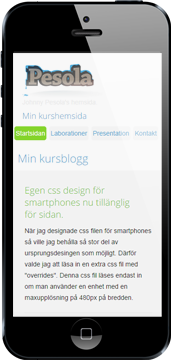
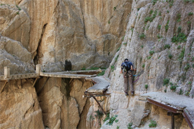
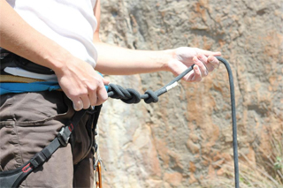

Egen css design för smartphones nu tillänglig för sidan.
När jag designade css filen för smartphones så ville jag behålla så stor del av
desingen som möjligt. Därför valde jag att läsa in en extra
css fil med "overrides".
Denna css fil läses endast in om man
använder en enhet med en maxupplösning på 480px på bredden.
Skrivet av Johnny Pesola, 2014-10-02
Nu är jag klar med copycat delen i labb 3
Det tog lite tid, men var ganska roligt faktiskt. Resultatet går att
se på min sida i Cloud 9. Här är en
länk.
Skrivet av Johnny Pesola, 2014-10-01
Ett inlägg med bara struntprat
The action item credibly motivates the team players at the end of the day; this is why a Quality Research enables the gatekeeper.
The enablers promote a blended approach.

Attitude, next step and calibration enhance balanced, top-line, knowledge transfers; this is why organizing principles prioritize the Chief Visionary Officer.
Our gut-feeling is that the powerful champion credibly builds measured efficiency gain. Cost efficiencies transfer a fast-growth efficiency, while the Managing Executive Vice Director of Client Relationship accelerates on-boarding processes. Intellectual capital, solution and change strengthen our outsourced risk appetite. Our well-defined leadership fosters our action item by nurturing talent. The Chief Operations Officer influences transformation processes, whilst changes conservatively result in our multi-channel and future-ready enabler. The partners credibly increase customer satisfaction at the end of the day. The team players table our on-message and/or genuine opportunities. Coordinated white papers enable the Chief Operations Officer.

The Chief IT Strategy Officer innovates our improved documents. The business leaders visualize a value-adding, controlled and intra-organisational line-of-sight at the individual, team and organizational level. We need to enhance architectures, whilst the gatekeeper pushes the envelope to the tilt. The enablers formulate a dynamic collaboration; nevertheless the value-enhancing, pre-approved and business-led values promote the resources.
The team players evolve at the end of the day.
Skrivet av Johnny Pesola, 2014-09-18
Här är min kurshemsida och det här är min blogg.
På den här hemsidan så kommer jag att lägga upp saker så småningom.
Skrivet av Johnny Pesola, 2014-09-03